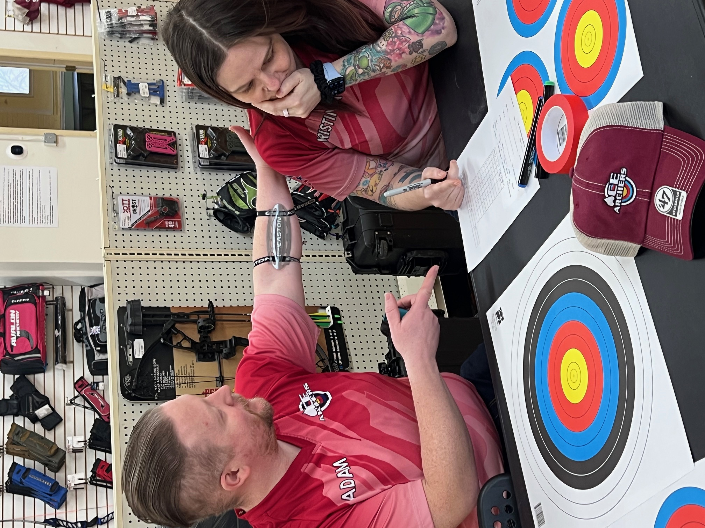
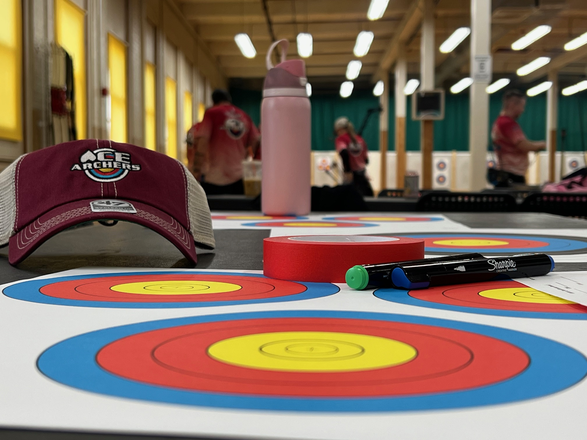

Arcus
Creating a User‑Centered Archery Experience
UX Research & Visual Systems Design
Aspire. Iterate. Actualize.
I design with empathy, research, and intention creating accessible, usable experiences that genuinely support people.
While creativity and perfection can complement each other beautifully, they are not codependent. Creativity, to me, is permission. It is permission to wander, to iterate, and to discover the possibilities that only reveal themselves when you let curiosity lead instead of perfection.


I'm Kristina, a UX designer with a foundation in Information Technology and a passion for creating thoughtful, accessible digital experiences. I'm driven by research, guided by empathy, and energized by the challenge of turning complex problems into clear, human‑centered solutions.
My design philosophy is rooted in the belief that creativity grows through exploration, not perfection. I value the process of trying, iterating, and learning. As I see it, that's exactly where meaningful design emerges.
Outside of design, I'm deeply connected to the archery community. I compete, coach, and mentor archers of all ages, and the personal growth I've experienced through that community inspired the archery app featured in my portfolio. Coaching has taught me patience, clarity, and the importance of creating environments where people feel supported enough to try, learn, and grow. Each of these valuable lessons have helped to shape how I design.
I'm also someone who loves creative expression and a bit of friendly competition. During the pandemic, I dove into elaborate makeup character creations, exploring identity and storytelling through color and transformation. These days, you can also find me in a recreational bowling league, enjoying the rhythm, focus, and camaraderie it brings.
At home, life is full and joyful with my husband. His dedication to his work inspires me to stay committed to my own growth. We have a dog and two cats, a Shiba Inu named Kali and our two cats, Eevee and Onix. I'm also a massively proud aunt to two nephews and a niece, and I adore being part of their world. They remind me why curiosity, play, and connection matter so much in both life and design.
I bring all of these experiences, the technical, the creative, the competitive, the personal, into my work, shaping digital experiences that feel intuitive, supportive, and genuinely human.


I explore user needs through stakeholder conversations, competitive research, and listening closely to the people at the center of the experience. This is where the relationship truly begins. I gather stories, patterns, and signals that help me understand what people value and what's happening beneath the surface so I can design in a way that enhances their journey.
I shape my findings into intent through personas, journey maps, and structured information flow to understand the opportunity from a human perspective. This step helps me bring direction into focus and create a shared foundation for the experience we're building. It's here that the relationship between user and designer naturally takes form, molding that vision into the design itself.
I bring ideas into form through sketches, wireframes, and prototypes. This is where your vision starts to take shape by moving from loose concepts to thoughtful, high‑fidelity experiences. My technical background helps me think in systems and translate complexity into clarity, allowing me to design interactions that feel intuitive, accessible, and grounded in how things actually work.
I refine and validate the experience through usability feedback, thoughtful iteration, and careful attention to detail. This stage is about bringing the work to life in a way that feels natural, seamless, and connected to the people it's meant to support. It's where intention becomes something real, guided by the relationship formed through listening, understanding, and designing with care.
Have a project in mind or want to discuss design? I'd love to hear from you.